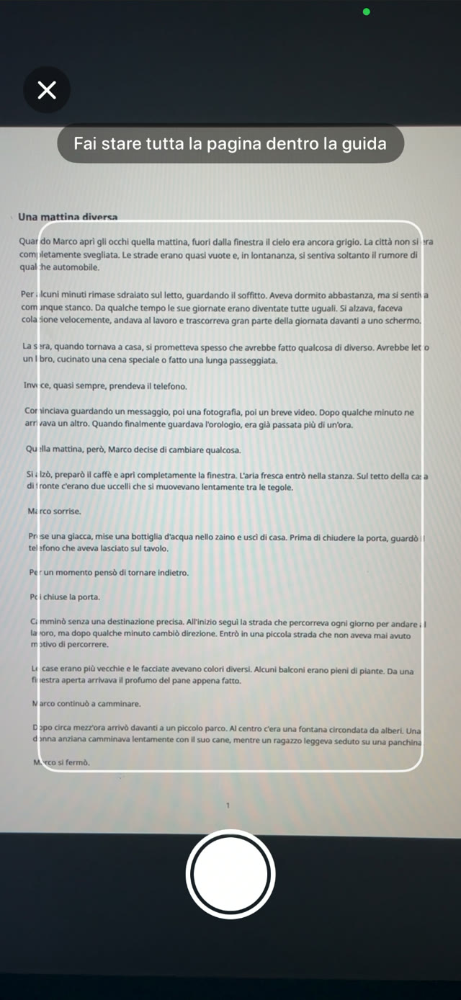
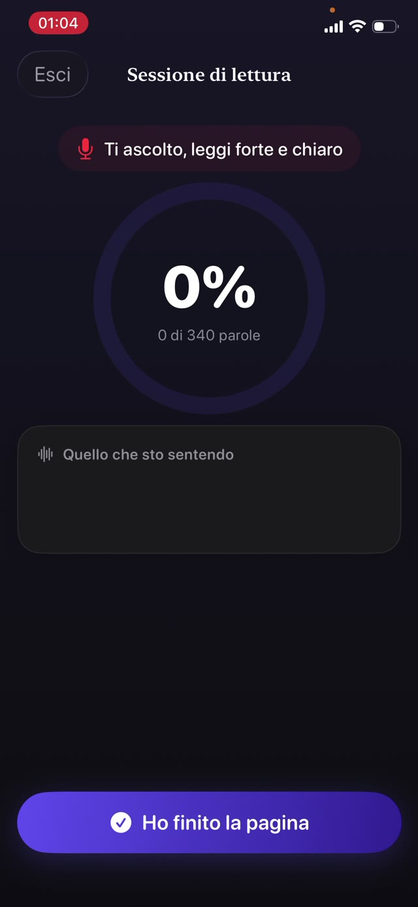
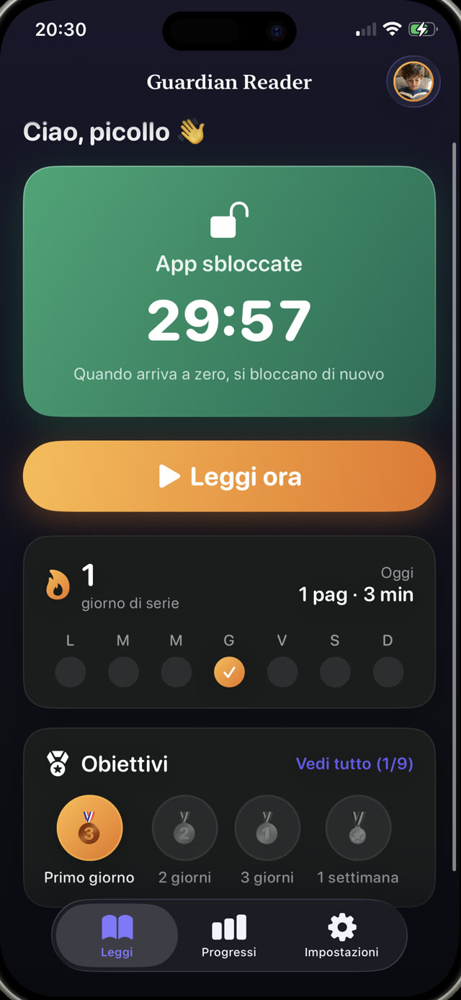
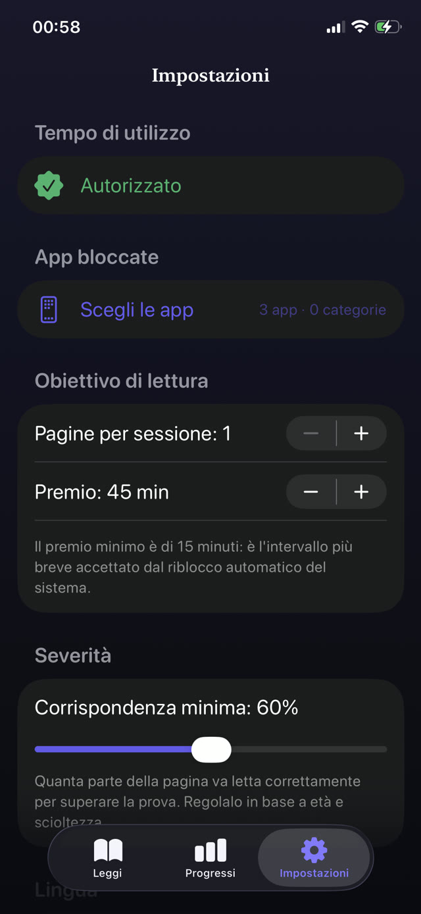
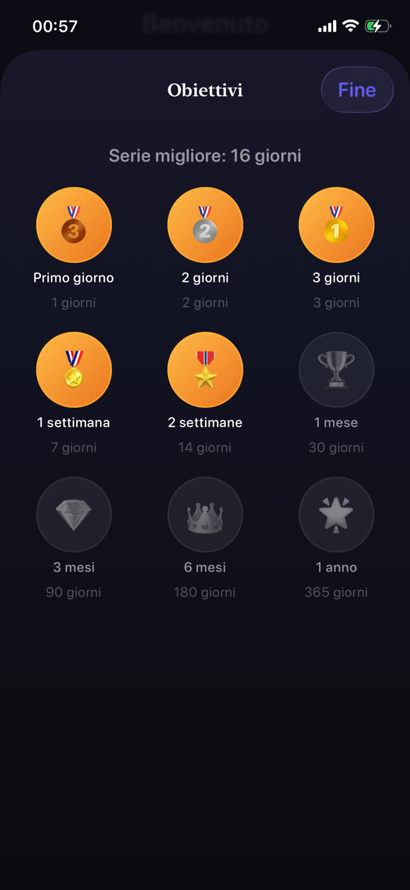

Il controllo parentale che li ascolta leggere.
Guardian Reader blocca le app che scegli tu. Tuo figlio legge un libro vero ad alta voce, l'iPhone verifica ogni parola, e il tempo di schermo guadagnato si sblocca. Senza forza di volontà, né la tua né la sua.
Gratis · Per l'iPhone del bambino, iOS 18+ · Nessun account, nessun tracciamento · 9 lingue


Leggere per giocare.
Guardian Reader mette un libro vero tra tuo figlio e le sue app. Qualche pagina letta ad alta voce, verificata parola per parola, e lo schermo si apre.
iPhone · iOS 18+ · Gratis: lettura verificata + un'app bloccata · Premium con 7 giorni gratis
Dentro l'app
Le app restano bloccate finché non si legge.
Controllo parentale e coach di lettura in una sola app. Tuo figlio la usa da solo; a verificare ci pensa l'iPhone.
Verifica in tempo reale
Guardala verificare, parola per parola.
Mentre tuo figlio legge ad alta voce, l'app confronta ciò che sente con le pagine scansionate e la percentuale sale in diretta. Questa è una sessione vera, un libro di carta letto a un iPhone. Una lettura onesta supera di molto l'asticella; parlare d'altro finisce vicino allo zero.
Leggere ad alta voce è l'esercizio →
Scansione delle pagine
Ogni libro di carta diventa una chiave.
Tuo figlio fotografa ogni pagina che leggerà, una foto per pagina, e poi le legge di seguito come un libro vero. Conta solo il testo dentro la cornice, e una pagina già scansionata nella stessa sessione viene rifiutata da sola.
Come far leggere di più i tuoi figli →
Niente scorciatoie
Riconosce le scorciatoie che i bambini prendono davvero.
Nessun quiz da indovinare, nessun sistema d'onore. Le parole pronunciate vengono confrontate con le pagine esatte che ha scansionato, in ordine: sfogliare, improvvisare o dire che è fatto non passa. Le esitazioni e gli errori piccoli sì: verifica che abbia letto, non che sia stato perfetto. Un cursore stabilisce quanto è severa la soglia.
Come funziona il tempo di schermo guadagnato →
La ricompensa
Lettura superata. Telefono libero.
Le app si aprono per i minuti guadagnati, con il conto alla rovescia in vista. A zero si richiudono da sole, applicate da Tempo di utilizzo di Apple, anche se Guardian Reader è chiuso.
Limitare YouTube e TikTok →
Regole dei genitori
Il cambio lo stabilisci tu.
Pagine dentro, minuti fuori: una pagina vale circa 15 minuti a 4-6 anni, fino a quattro pagine per circa 45 minuti in adolescenza. Il piano propone un punto di partenza secondo l'età, e ogni numero si cambia dietro un PIN dei genitori separato dal codice del dispositivo.
Regole sul tempo di schermo che reggono →
Progressi e serie
Medaglie che li fanno tornare.
Serie, stelle e medaglie per il bambino; pagine al giorno, al mese e all'anno per te. Premium aggiunge un rapporto PDF di ogni sessione: data, minuti, corrispondenza e il testo davvero letto, pronto per l'insegnante.
Un diario di lettura per la scuola →
Privata dall'origine
Un microfono puntato su un bambino deve spiegarsi.
La fotocamera legge la pagina, il microfono trascrive la lettura, e tutto avviene solo sul dispositivo. Nessun account, nessun server, nessuna analisi, nessun SDK di terzi: la voce non esce mai dall'iPhone, e tutto funziona offline.
Leggi l'informativa completa →How it works
Quattro passi. Niente da negoziare.
Si configura una volta insieme a tuo figlio. Da lì in poi il patto va da solo: il limite sta nell'app, non nella tua voce.
Blocca le app
Scegli app o intere categorie da bloccare, come YouTube, TikTok o i giochi, e proteggi le impostazioni con il tuo PIN dei genitori.
Scansiona le pagine
Tuo figlio fotografa le pagine del libro vero che leggerà, una foto per pagina.
Legge ad alta voce
Le legge tutte di seguito mentre l'iPhone ascolta e confronta ogni parola con il testo scansionato.
Si sblocca il tempo di schermo
Lettura superata, e le app si aprono per i minuti guadagnati. A zero si bloccano da sole.
Guides
Aiuto per i punti difficili.
Guide pratiche su tempo di schermo, blocco delle app e voglia di leggere, e su come Guardian Reader aiuta in ciascuno.
Come far leggere di più i tuoi figli
Sette approcci che funzionano con un bambino che preferisce lo schermo, e quello che non ti chiede forza di volontà.
Leggi la guida Tempo di schermoCome i bambini si guadagnano il tempo di schermo leggendo
Trasformare il tempo di schermo in qualcosa di guadagnato invece che dovuto, e come la regola regge senza che tu debba controllare.
Leggi la guida Controllo parentaleBloccare app sull'iPhone di tuo figlio
Cosa fa e cosa non fa Tempo di utilizzo, dove i bambini trovano le falle, e come chiuderle per davvero.
Leggi la guida YouTube · TikTokLimitare YouTube e TikTok per i bambini
Perché i limiti di tempo da soli non reggono contro i feed infiniti, e cosa va messo prima dell'app.
Leggi la guida Fluidità di letturaAllenare la fluidità di lettura a casa
Cosa intendono gli insegnanti per fluidità, perché leggere ad alta voce è l'esercizio, e come far entrare dieci minuti in una serata normale.
Leggi la guida Regole di famigliaRegole sul tempo di schermo che reggono davvero
Perché quasi tutte le regole di famiglia crollano dopo due settimane, e le tre cose che hanno in comune quelle che sopravvivono.
Leggi la guidaFAQ
Domande, con risposta.
Come verifica Guardian Reader che mio figlio abbia letto davvero il libro?
Mio figlio può barare fingendo di leggere?
Una voce IA può leggere la pagina al posto di mio figlio?
Installo Guardian Reader sul mio telefono o su quello di mio figlio?
Quali app posso bloccare sull'iPhone di mio figlio?
Guardian Reader registra la voce di mio figlio?
Quali libri funzionano con l'app?
Per quale età è pensato Guardian Reader?
Quanto costa Guardian Reader?
Ottengo un diario di lettura per la scuola?
Funziona senza internet?
Mio figlio può cancellare l'app o cambiare le impostazioni?
Stasera si legge prima.
Due minuti di configurazione. Tuo figlio legge ad alta voce, si guadagna il suo tempo di schermo, e tu smetti di essere il cattivo.
Scarica suApp StoreGratis · Nessuna pubblicità, nessun account, nessun tracciamento